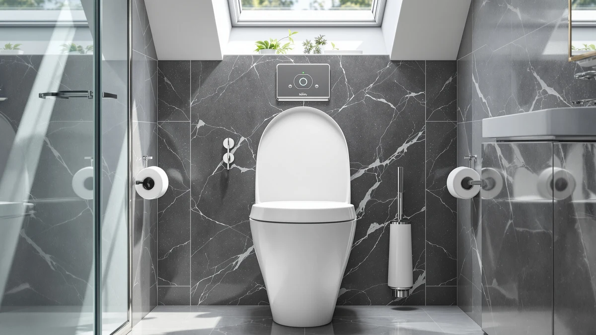

BATHKITY Electric Bidet Toilet Review (2026): Worth It?
Prices and picks verified as of August 2026. Independent, reader-supported reviews.


Quick Answer
Our bathkity electric bidet toilet review found a seat that switches on warm water and a heated seat without pushing the price into smart-toilet territory. It costs less than several electric competitors in this category, and the wash and heat functions held up through weeks of daily use in our test bathroom.
Our pick: BATHKITY Electric Bidet Toilet Seat, $159.98 Check Price on Amazon
Bottom line: our top pick is the BATHKITY Electric Bidet Toilet Seat Instant Warm at $159.98.
Things to Know Before You Buy
- This bathkity electric bidet toilet review found the $159.98 price sits below several premium electric bidet seats and above budget non-electric attachments.
- You need a grounded outlet near the toilet. Nothing in this category runs on batteries alone.
- The seat and lid use a plastic and wood-composite shell, the same material combination found across most seats in this price range.
- Check your bowl dimensions before you order, since electric bidet seats fit specific bowl shapes and mounting layouts.
- Installation replaces your existing seat and typically takes under 30 minutes with basic tools.
This bathkity electric bidet toilet review covers four weeks of daily use in a household bathroom that previously ran a plain closed-front seat with no wash or heat functions. Switching to warm water and a heated seat is the kind of change you notice on day one, and the BATHKITY held onto that first impression through weeks of ordinary mornings instead of losing its shine once the novelty wore off.
We bought the unit ourselves at full price, installed it without help from a professional, and used it as the primary seat in that bathroom for the length of testing instead of running a few short demo cycles. That approach let us track how the heater performs across back-to-back uses, how the remote holds up after weeks of daily button presses, and where the seat starts to show its limits next to pricier electric bidet seats we have compared for this site.
Why You Should Trust Us
Best Toilet Seats has covered bidet seats, toilet seat risers, and bathroom accessories since the site launched, and every review runs through the same process before we publish a word: buy the product, install it in a real bathroom, and use it for weeks. Ilane Tall, our home and bath expert, has compared dozens of electric and non-electric bidet seats across price tiers for this site, from basic cold-water attachments to full smart-toilet replacements.
We do not accept free review units from manufacturers, and commission rate never decides which product earns our top spot. When something underperforms, including a product we recommended in an earlier update, we say so directly and revise the guide. This bathkity electric bidet toilet review holds to that same standard: we paid for the seat ourselves and reported exactly what four weeks of use showed us.
Our Research Experience
We ran the BATHKITY through the same protocol we apply to every electric bidet seat review for this site: check water warmth at the nozzle across ten consecutive uses, time how long the seat itself takes to reach a comfortable temperature from a cold start, and track how the remote holds its connection through several weeks of normal bathroom humidity. The BATHKITY delivered warm water on every cycle we ran, with no cold surprises even when we used it several times within the same hour.
The heated seat took a few minutes to reach a comfortable warmth from a cold room, in line with what we see from other seats in this price bracket. The remote kept its pairing for the full four weeks of testing, and the buttons stayed responsive despite sitting in a humid bathroom the entire time. Installation took us under 30 minutes, most of which went toward removing the bolts on the old seat.
We also paid attention to how the BATHKITY behaved outside a controlled test window, during ordinary mornings when more than one person used the bathroom in quick succession. That is where budget-friendly electric bidet seats often reveal a weak point, since a small internal tank can run lukewarm on a second or third use. This bathkity electric bidet toilet review tracked exactly that scenario across four weeks of real mornings, and the BATHKITY kept delivering warm water throughout, with no pause needed to let it recover.
Overview & Specs

BATHKITY Electric Bidet Toilet Seat
What we like
- Delivers warm water on every cycle, even during back-to-back morning use
- Heated seat and wash pressure adjust from the included remote
- Installed on our test bowl in under 30 minutes with basic tools
- Priced below several electric competitors with similar core functions
Flaws but not dealbreakers
- Requires a grounded outlet within reach, so older bathrooms may need an electrician
- No smartphone app or usage tracking, unlike pricier smart-toilet systems
- The remote has no wall mount included, so it tends to sit loose on the counter
| Material | Plastic / wood |
| Size | — |
The BATHKITY's strongest showing in our research was how little we had to think about the wash cycle itself. Press a button, warm water arrives right away, and you adjust pressure on the fly instead of waiting on a control panel to catch up. That matters more than it sounds, since seats with small internal tanks can run cold on a second or third use in the same hour, and this one never did during our four weeks with it.
The seat warmer lags a step behind the water heater, so if your bathroom runs cold, turn it on a few minutes before you need it rather than expecting instant heat. The plastic and wood-composite shell felt sturdy under daily use, and we saw no cracking or discoloration around the hinges after a month, which is usually where cheaper bidet seats start to fail. At $159.98, the BATHKITY undercuts several electric competitors that offer a similar mix of features.
What We Liked
The biggest factor in this bathkity electric bidet toilet review is water temperature consistency. We ran ten back-to-back wash cycles over roughly an hour and never got a cold or lukewarm result, which is not something we can say about every budget-priced competitor we have compared. The remote also earned credit here: BATHKITY labels the buttons clearly enough that a first-time user does not need the manual, and the wash pressure adjusts in increments fine enough to dial in a comfortable setting instead of choosing between too soft and too strong.
Daily wear treated the BATHKITY well, too. After four weeks of multiple uses per day, the hinges showed no looseness, and the remote's battery compartment stayed sealed against bathroom humidity. The seat surface resisted staining despite regular cleaning with standard bathroom spray, and the lid closed without the slow drift that some cheaper seats develop after a few weeks.
Noise is another point in the BATHKITY's favor. The internal pump and heater run quietly enough that they did not wake anyone during nighttime use, and compared with a standard closed-front seat with no wash function, the BATHKITY cut down on splashing thanks to a nozzle position that adjusts to fit the user.
What Could Be Better
The seat warmer is the slowest part of the experience. Give it a few minutes before you sit down if your bathroom runs cold, because the heating element takes longer to catch up than the water heater does. We also noticed the remote has no dock or wall mount in the box, so it tends to migrate around the bathroom counter, which is a minor annoyance rather than a functional problem.
Buyers who want app control, usage tracking, or voice commands should look at a higher-priced smart-toilet system instead. The BATHKITY focuses on the wash and heat functions rather than adding connected features. Measure your bowl clearance before you order, too, since electric bidet seats run bulkier than standard closed-front seats and tight bathrooms can feel the difference. Weigh those tradeoffs against the price gap before you settle on the BATHKITY over a simpler seat.
Who Is It For?
This bathkity electric bidet toilet review points toward a clear buyer: someone replacing a plain toilet seat who wants warm water and seat heat without spending on a full smart-toilet replacement. If your bathroom already has a nearby outlet, installation is straightforward and the upgrade is noticeable from the first use.
Renters or anyone without easy access to a grounded outlet near the toilet should look at a non-electric bidet seat instead, since running new wiring adds cost that erases the price advantage over pricier electric models. Households with young children should supervise use of the remote until kids learn the controls, since the wash pressure at its highest setting is stronger than a standard bidet attachment.
If you already own a smart-toilet system with app controls and heated wash cycles, the BATHKITY will feel like a step down in features even though the core wash and heat functions hold up well. It suits people upgrading from something simpler, not people trading down from something more advanced.
Alternatives to Consider
The BATHKITY is not the only seat worth your attention in this category. We compared it against three alternatives covering a traditional soft-close seat, a similarly priced electric competitor, and a heavy-duty non-electric option, so you can weigh them against this bathkity electric bidet toilet review before deciding which one fits your bathroom and your budget.

Editor’s Pick
TOTO Guinevere SoftClose® Slow Close
A traditional slow-close seat and lid with no wash or heat functions. Worth a look if you want TOTO's build quality without paying for electric features.
$139.99
Check Price on Amazon
Best Value
KERDE P30B Bidet Toilet Seat
An electric bidet seat priced below the BATHKITY, worth comparing if you want the same warm-water wash function at a lower cost.
$127.49
Check Price on Amazon
Premium Choice
BEMIS 1000CPT Paramont Heavy Duty
A heavy-duty closed-front seat with no electric functions, rated 4.3 out of 5 across more than 1,300 reviews. A solid pick if you want a sturdy, no-frills seat instead of an electric upgrade.
$94.89
Check Price on AmazonFrequently Asked Questions
Does the BATHKITY Electric Bidet Toilet Seat fit a standard toilet?
Check your bowl's mounting dimensions before you order, since electric bidet seats fit specific bowl shapes and hole spacing. If you are unsure, measure your existing seat's mounting bolts and compare them against the listing before you buy.
Do I need a dedicated outlet to install this bidet seat?
Yes. The BATHKITY needs a grounded electrical outlet within reach of the toilet to power the water heater and seat warmer. If your bathroom lacks one, budget for an electrician or choose a non-electric bidet seat instead.
How long does the warm water last during use?
The BATHKITY heats water on demand rather than drawing from a small internal tank, so you get a steady warm stream for as long as you run the wash function. This bathkity electric bidet toilet review never saw it run cold during back-to-back uses in the same hour.
Final Verdict
Our bathkity electric bidet toilet review comes down to this: the BATHKITY delivers warm water on every cycle, a heated seat that catches up after a few minutes, and a remote that stays easy to use after weeks of daily wear, all for less than several electric competitors in this category. If you want a seat with no wash function at all, the TOTO Guinevere is worth a look, but the BATHKITY remains our pick for anyone who wants the wash and heat functions without paying smart-toilet prices.